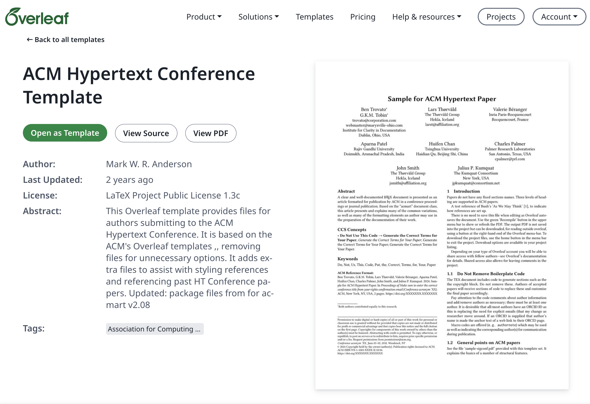

Professional Scientific Writing with Overleaf¶
Learning Objectives
- Understand the role of Overleaf in the scientific writing ecosystem.
- Set up a collaborative LaTeX project using official ACM templates.
- Manage bibliographies and citations using integrated BibTeX support.
- Implement a collaborative workflow for co-authoring research papers.
- Compare the direct LaTeX approach of Overleaf with the Markdown-to-PDF workflow.
Overview¶
While Markdown-to-PDF workflows offer speed and simplicity, many scientific journals and conferences—including the ACM—provide official LaTeX templates that are the "gold standard" for final submissions. Overleaf is a cloud-based LaTeX editor that removes the need for local installation, providing a real-time collaborative environment similar to Google Docs but for professional typesetting.


Core Sections¶
1. Introduction to Overleaf¶
Overleaf is a collaborative, cloud-based LaTeX editor. It eliminates the "LaTeX installation headache" by providing a pre-configured environment with the most common packages and distributions (like TeX Live) already installed.
Key Advantages¶
- Zero Installation: No need to manage local TeX distributions, which can be several gigabytes in size.
- Real-time Collaboration: Multiple authors can edit the same document simultaneously with a live preview.
- Template Library: Direct access to official templates from publishers like ACM, IEEE, and Nature.
- Integrated Compilation: Compiles documents on the cloud, reducing the load on the local machine.
2. Setting Up an ACM Project¶
To start a paper using the official ACM style in Overleaf, it is best to leverage the Overleaf Template Gallery.
Using the Template Gallery¶
The Template Gallery is a comprehensive repository of professionally designed LaTeX layouts. Instead of starting from a blank file, you can browse specific categories such as "Journal Articles," "Conference Papers," "Theses," or "CVs."
To use a template:
1. Navigate to the Overleaf Template Gallery.
2. Search for "ACM" or browse the "Academic Journal" category.
3. Select the desired template (e.g., the official acmart layout) and click "Open as Template." This automatically creates a new project in your account with all the necessary .cls and .tex files pre-configured.
Project Structure¶
A typical Overleaf project created from a template contains:
* main.tex: The primary LaTeX source file.
* references.bib: The bibliography database.
* figures/: A folder for images and diagrams.
* acmart.cls: The class file defining the ACM layout.
Importing and Exporting Files¶
Overleaf provides several options for moving data in and out of the cloud environment:
- Importing: Beyond using templates, you can import projects as
.ziparchives or sync directly with GitHub. Pandoc is used internally to import.docxand.mdfiles, though visual styling may not be fully preserved. - Exporting: You can download your project as a source
.zipfor local backup or as a final PDF. Overleaf also allows exporting the content to.docx,.md, or.htmlformats. - Technical Note: Ensure your project compiles without errors before attempting an export, as unresolved LaTeX errors can cause the conversion process to fail.
3. Managing Citations and Bibliographies¶
Overleaf integrates seamlessly with BibTeX. To manage citations:
- Upload the
.bibfile: Upload your bibliography database to the project root. - Cite in Text: Use the
\cite{key}command to insert a citation. - Define the Style: Ensure the preamble contains
\bibliographystyle{ACM-Reference-Format}and the end of the document has\bibliography{references}. - Automatic Updates: Every time the document is compiled, Overleaf updates the references list based on the citations actually used in the text.
4. Collaboration and Version Control¶
Overleaf provides a "Review" mode and "Chat" functionality to facilitate co-authoring.
- Sharing: Invite co-authors via email or a shareable link.
- Track Changes: Enable "Track Changes" to see exactly what was modified by which author.
- Comments: Highlight text to leave comments or suggestions without altering the manuscript.
- Git Integration: Premium accounts allow syncing the project with a GitHub repository, enabling a hybrid workflow of local Markdown/LaTeX editing and cloud compilation.
5. Overleaf vs. Markdown-to-PDF Workflow¶
Choosing between a direct LaTeX approach (Overleaf) and a Markdown-to-PDF approach (Pandoc) depends on the project's needs.
| Feature | Overleaf (Direct LaTeX) | Pandoc (Markdown \(\rightarrow\) PDF) |
|---|---|---|
| Learning Curve | Steeper (requires LaTeX knowledge) | Lower (uses simple Markdown) |
| Layout Control | Absolute (exact control over every pixel) | High (via templates, but slightly abstracted) |
| Speed of Writing | Slower (formatting interferes with flow) | Faster (focus on content first) |
| Collaboration | Superior (real-time, cloud-native) | Standard (Git-based, asynchronous) |
| Installation | None (Cloud-based) | Medium (Pandoc + LaTeX/Docker) |
Summary Checklist¶
- [ ] Created an Overleaf account and started a new project.
- [ ] Loaded the official ACM
acmarttemplate. - [ ] Uploaded a
.bibfile and successfully inserted a citation. - [ ] Configured the document metadata (title, authors, affiliation).
- [ ] Used the "Track Changes" feature to collaborate with a peer.
- [ ] Compiled the document and downloaded the final PDF.
Assignments¶
Assignment.1: Template Setup
Start a new project in Overleaf using the ACM template. Update the metadata to include your name and affiliation, and compile the document to ensure the layout is correct.
Solution: Template Setup
Navigate to the "New Project" menu, search for "ACM", and select the acmart template. Edit the \title{} and \author{} commands in the preamble.
Assignment.2: Bibliography Integration
Create a .bib file with three entries from a real research paper. Upload this file to Overleaf and use the \cite{} command to reference all three in the introduction.
Solution: Bibliography Integration
Use a tool like Google Scholar or Zotero to export BibTeX entries. Upload the .bib file, ensure \bibliography{filename} is at the bottom of main.tex, and compile.
References¶
- Overleaf Documentation - https://www.overleaf.com/learn
- ACM Authoring Guide - https://www.acm.org/publications/authors/reference-formatting
- LaTeX Project - https://www.latex-project.org/
Self-Evaluation¶
When should you choose Overleaf over a Markdown-to-PDF workflow?
Choose Overleaf when absolute control over the final LaTeX typesetting is required, or when collaborating in real-time with co-authors who are not comfortable with Git or Markdown.
How does Overleaf handle the LaTeX installation process?
Overleaf provides a fully managed, cloud-based TeX Live distribution. This means the user does not need to install any LaTeX packages locally; they are provided by the Overleaf servers.
What is the advantage of using the acmart class in Overleaf?
The acmart class is the official specification for ACM publications. Using it ensures that margins, fonts, and citation styles perfectly match the journal's requirements without manual adjustment.